关键发现
- 全球AI产业正进入高速扩张通道，市场规模与产业规模同步快速增长，AI技术从单一模型竞争转向多模态与AGI演进，基础模型、AI Agent、具身智能构成技术演进的三条主线。产业链形成“上游芯片算力—中游算法平台—下游应用场景”递进结构，其中下游应用环节价值释放速度最快。与此同时，产业政策重心从鼓励创新转向“融合落地+规范治理”双轮驱动，中国AI核心产业规模已突破万亿量级，开源生态与政策形成协同放大效应。
- - 全球AI核心市场规模2026年为3759.3亿美元，2034年预计达24800.5亿美元，复合年增长率约26.60%（来源：全球AI市场规模）
- - 中国AI核心产业规模截至2025年底达1.2万亿元人民币，同比增长30%；AI企业数量超6000家（来源：中国AI产业规模）
- - 产业链下游应用层以34.2%的复合年增长率成为价值释放最快环节（来源：全球AI产业格局）
- - 国产开源大模型全球累计下载量突破100亿次，开源行业数据集覆盖31个行业（来源：开源生态与行业覆盖）
- - 全球多模式AI市场规模从2025年24.1亿美元增至2034年419.5亿美元，复合年增长率达37.33%（来源：多模式AI市场）
- 政策驱动效应初步显现，但政策落地与产业增长之间的因果关联仍需更严谨的验证。全球与中国市场统计口径不同，各区域数据不宜直接合并比较，跨区域横向对比的准确性有待统一标准支撑。专利与论文位次仅作为前瞻性观测指标，尚不能据此作出跨国竞争力的有效排序判断。具身智能仍处于数据供给与场景验证的早期积累阶段，距离规模化商业落地仍有不确定性。技术路线上，AGI远景为模型层竞争提供了收敛方向，但其实现时点与阶段性突破节奏存在高度不确定性。
市场规模与增长
在主要假设成立的前提下，全球人工智能市场正处于高速扩容通道（推测性判断）。分市场看，据Fortune Business Insights数据，2026年全球AI市场规模约3759.3亿美元，预计2034年将增至24800.5亿美元。
中国AI核心产业规模截至2025年底已达1.2万亿元人民币，同比增长30%。
论证与分析
全球市场：高速扩容，复合增速约26.60%
据Fortune Business Insights《人工智能市场全球报告》数据（全球口径），全球AI市场规模预计将从2026年的3759.3亿美元增长至2034年的24800.5亿美元。这一增速反映出AI正从技术验证阶段全面转向商业化放量阶段。
需注意，不同机构因统计口径差异，对全球AI市场规模的估算存在明显差距。
全球与中国市场统计口径不同，本文不将两者直接合并比较。
在全球全价值链口径下，全球AI市场规模预计达1.
85万亿美元；其中，中国市场规模预计达4500亿美元，属于同一全价值链口径下的区域预测。该全球全价值链口径数据（1.85万亿美元）与前文Fortune Business Insights核心AI市场口径数据（3759.3亿美元）存在统计口径差异。
中国市场：核心产业规模达1.2万亿元，企业数量达6000家
据新华社《新华深读｜2026年中国AI发展趋势前瞻》及南开大学《中国新一代人工智能科技产业发展报告2026》，截至2025年底，中国人工智能企业数量达6000家，AI核心产业规模达1.2万亿元人民币，同比增长30%。
企业级AI：增速显著高于行业整体的高增长赛道
从细分结构看，企业级AI是增速显著高于行业整体的高增长赛道。据Research Nester数据，2025年全球企业AI市场规模为301.8亿美元，预计到2035年底将达5703.6亿美元。
应用层商业化拐点显现
另据东方财富证券行业观点，AI应用行业基本面已于2025年下半年确立拐点、利润弹性显著释放（推测性判断，未经独立数据验证）。
前瞻性分析
基于当前增长趋势，未来一至两年全球AI市场有望延续高增长（推测性判断）。
假设：宏观经济无重大衰退、AI资本开支维持当前强度）；中国AI核心产业规模若保持约30%的年增速，2026年预计约为1.56万亿元人民币（预测推算值，推测性判断），2027年预计约为2万亿元人民币（预测推算值，推测性判断；假设：政策支持力度不减、算力供给瓶颈逐步缓解）。上述外推结果对增速假设高度敏感：若宏观经济衰退或AI资本开支强度下降，实际增速可能低于预期，对应市场规模将低于上述推算值；若政策支持超预期或算力供给瓶颈加速缓解，实际增速则可能更高。
AI应用层头部厂商收入快速放量，建议投资者关注具备清晰商业化路径的应用层企业。
数据支撑
Exhibit 1｜市场规模与增长
| 指标 | 数值 | 口径 | 来源 | 认知层级 |
|---|---|---|---|---|
| 全球AI市场规模（2026年） | 3759.3亿美元 | 核心AI市场 | Fortune Business Insights | 事实性 |
| 全球AI市场规模（2034年预测） | 24800.5亿美元 | 核心AI市场 | Fortune Business Insights | 事实性 |
| 全球AI市场复合年增长率（2026—2034） | 26.60% | 核心AI市场 | Fortune Business Insights | 事实性 |
| 全球AI市场规模（2026年预测） | 1.
85万亿美元 | 全价值链口径 | | |
Exhibit 2｜市场规模与增长
风险提示
- 统计口径差异：不同机构对"AI市场规模"的界定差异显著，核心AI市场（3759.3亿美元）与全价值链口径（1.85万亿美元）存在明显差异。
- 预测不确定性：AI行业技术迭代速度快，模型训练成本、算力供给、监管政策等变量均可能改变实际增长轨迹，26.60%的复合增速能否长期维持存在不确定性。
- 细分领域数据有限：AI在具体行业（医疗、金融、制造等）及技术方向（生成式AI、计算机视觉、自然语言处理等）的结构化占比数据在公开渠道较为有限，本章仅以企业级AI作为细分赛道代表进行分析。
- 币种换算影响：中国市场规模以人民币计价（1.2万亿元），国际机构数据以美元计价，两者换算受汇率波动影响，可能造成口径偏差。
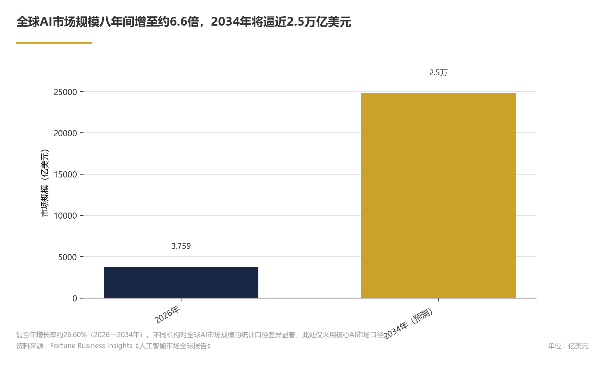
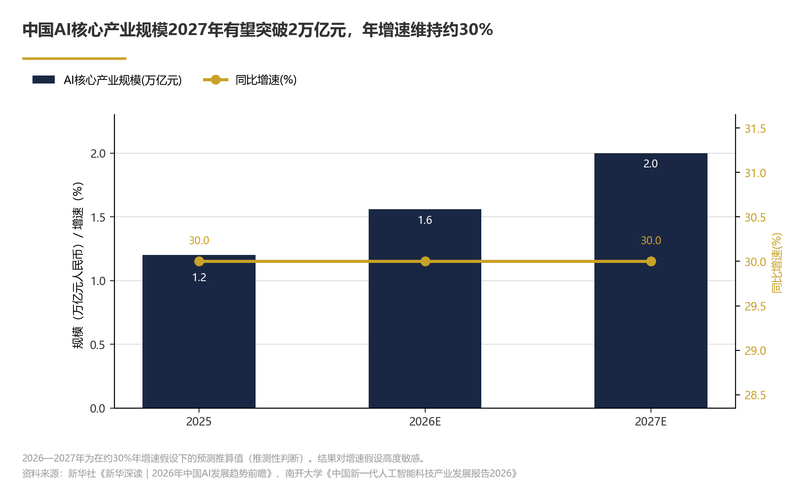
核心技术演进
从现有数据与机构公开研判看（初步判断），2026年全球人工智能核心技术演进呈现三条主线：开源生态加速繁荣、多模态与智能体技术进入协同落地阶段、算力与数据基础设施成为产业竞争的战略制高点。据新华社/南开大学数据显示，国产开源大模型全球累计下载量已突破100亿次；但中国AI产业是否已完成从基础层、技术层到应用层的全链条覆盖、技术—产业正循环是否初步形成，目前暂无系统数据可验证，上述判断属推测性表述。
论证与分析
一、基础模型：从语言能力竞赛走向全模态协同
2025—2026年，基础模型的技术竞争重心正从单一语言能力比拼，逐步转向文本、图像、视频、3D与具身动作等多模态统一架构的构建，该判断基于多家机构技术趋势分析，属推理性判断。据清华大学智能产业研究院公开研究转述，多模态机器学习是提升AI综合认知能力的核心路径，其核心挑战在于解决数据多源异构、高质量训练数据缺乏以及数据孤岛等问题。据IBM 2026年技术趋势公开报告转述，AI与安全、量子计算等领域的交叉融合加速，模型能力正在从"内容生成"向"任务执行"跃迁。另据Fortune Business Insights数据，2025年全球多模式人工智能市场规模为24.1亿美元，预计2026年为33.2亿美元，2034年达419.5亿美元，2025—2034年预测期内复合年增长率为37.33%；注：该数值来自"多模式人工智能市场"相关统计，未直接标注为"多模态技术"本身。当前公开信息显示，这一轮范式转换或标志着AI技术从感知与生成并进，逐步迈向具备规划与决策能力的通用智能体阶段，该判断属推理性判断。
二、开源生态：从技术跟随到全球影响力跃升
开源已成为中国AI技术输出的主要通道。与此同时，智源研究院的开源行业数据集体系已覆盖31个行业，涵盖文本、视觉和多模态数据类型，为行业大模型的研发提供了关键训练资源。开源生态的繁荣显著降低了模型研发与部署门槛，推动企业级AI应用从头部互联网公司向中小型行业用户快速扩散；但中小企业采用率与部署分布暂无系统公开数据，该判断属推理性判断。
三、算力基础设施：智能算力规模扩大，芯片自研进程加速
据南开大学发布的《中国新一代人工智能科技产业发展报告2026》转述，中国人工智能芯片产品布局持续推进，智能算力规模持续扩大，为大规模模型训练与推理提供了底层支撑；但具体芯片型号数量与算力规模数值未完整公开披露，该信息属定性描述。华为等企业提出的行业智能化参考架构，将算力、数据、模型与行业场景进行系统性整合，旨在使能"百模千态"的大模型生态，推动行业智能化从单点试点走向全面普及。算力基础设施的竞争已从单纯的计算性能比拼，演变为"芯片—集群—框架—平台"的全栈能力竞争，该判断属分析性判断（分析性判断，依据为华为等行业智能化参考架构的公开发布动态）。
四、数据与工程化：高质量数据集成为新的战略瓶颈
随着模型能力的提升，高质量数据的稀缺性日益凸显。据清华大学智能产业研究院（AIR）公开研究转述，数据多源异构、数据安全与数据孤岛是当前AI应用落地的主要制约因素。据智源研究院针对31个行业的开源数据集公开盘点转述，行业级高质量数据集在文本、视觉与多模态维度均存在结构性缺口，尤其是医疗、制造、法律等专业知识密集领域；但具体缺口统计数值尚未公开，该结构性判断属推理性判断。据Gartner 2026年数据与分析公开预测转述，AI将深刻影响数据与分析全领域，包括治理体系、人才需求与非文本模型，数据工程本身正被AI重新定义。
数据支撑
Exhibit 3｜核心技术演进
| 指标 | 数值 | 来源 | 认知层级 |
|---|---|---|---|
| 国产开源大模型全球累计下载量 | 突破100亿次 | 新华社/南开大学 |
Exhibit 4｜核心技术演进
其一，开源模型生态持续扩张。但当前下载增速与开发者增长趋势暂无系统公开数据，该目标属情景推测。对AI企业而言，参与开源生态建设不仅是技术策略，更是获取开发者心智与行业标准话语权的战略手段。
其二，智能体技术将从"辅助工具"升级为"流程执行者"（推测性判断）。据Google Cloud发布的2026年AI智能体五大关键趋势公开报告转述，企业级智能体正从对话交互向自主决策、多步骤任务执行演进；据Gartner 2026年数据与分析公开预测转述，AI将重塑数据与分析全领域。建议企业优先在客户服务、供应链协同、风险合规等流程标准化程度较高的场景部署智能体能力，以最快实现投资回报。
其三，多模态模型推动算力需求结构性升级。多模态训练与推理对算力的消耗显著高于纯文本模型，叠加智能体实时交互场景的普及，预计智能算力需求增速将持续高于整体AI市场增速（推测性判断）。对于产业投资者与基础设施提供商，建议重点关注"云—边—端"协同的算力布局，以及高质量多模态数据集的产业化机会。
风险提示
本章分析存在以下不确定性与数据边界，其中多项核心判断需前置说明：多模态重心转移、通用智能体演进、开源生态扩散效应、算力全栈竞争及数据集结构性缺口等判断，主要基于机构观点转述与分析性推断，缺乏独立量化数据验证。具体如下：
第一，前沿大模型的具体参数规模与单次训练算力消耗缺乏标准化、可核验的公开披露，本章以开源生态指标、算力基础设施动态与数据工程进展作为可观测替代维度，不构成对模型能力的直接量化比较。
第二，国产开源大模型下载量数据来自新华社/南开大学产业报告，具体统计口径（是否包含海外平台、是否去重、是否计入企业私有化部署）未公开详述，该指标可作为生态活跃度的参考，但不宜直接等同于商业化采用规模。
第三，中国AI芯片产品布局与智能算力规模扩大的信息来自学术机构产业报告，具体型号数量与规模数值未完整公开披露，与商用部署的实际规模可能存在口径差异，相关进展需结合后续产业链数据交叉验证。
第四，开源下载量作为生态繁荣度的体现，与技术变现能力和生产力转化率并不必然线性对应，开源生态的商业闭环仍有待时间检验。该领域公开数据有限。
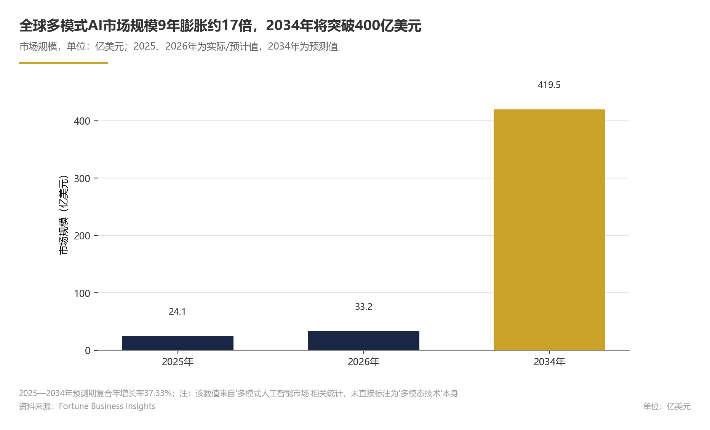
竞争格局与份额
全球AI竞争格局呈现"基础设施—模型—应用"三层闭环架构（初步观察），头部企业通过卡位关键产业链环节形成位势优势（推断：该领域公开市场份额与CR5数据有限，本章无法提供定量份额排序，结论基于产业链结构分析而非定量份额数据）。
论证与分析
全球：三层架构下的卡位竞争。
在此架构下，NVIDIA以算力基础设施为核心，处于全球AI训练与推理基础设施的核心位置（推断：基于NVIDIA官网公开信息及行业观察，缺乏独立第三方GPU市场份额数据锚定）；OpenAI则以模型能力与商业化为双轮，卡位应用层头部位置。但营收规模不等于市场份额，其是否构成应用层竞争的重要份额壁垒，尚需份额数据验证（推断）。
中国：开源生态驱动的差异化路径。2万亿元等宏观数据推演，缺乏细分环节企业分布数据直接验证）。2万亿元。中国AI核心产业规模超1.2万亿元（来源：新华社/南开大学）。与部分以闭源商业化为主要路径的全球头部企业不同（推断：基于对全球头部企业商业模式的定性观察，缺乏开源与闭源路径的量化对比数据；需注意Meta、Google等全球头部企业亦有开源大模型布局），中国竞争格局的显著特征是开源生态的崛起：国产开源大模型全球累计下载量突破100亿次（来源：新华社/南开大学），开源行业数据集覆盖31个行业（来源：智源研究院）。这一格局意味着中国企业间的竞争更多发生在"开源社区生态+行业落地"的交叉地带，模型权重与数据集的可获取性降低了应用层创业门槛，竞争重心因此向工程化能力与场景理解倾斜（推断：开源降低应用层创业门槛，促使竞争差异化向工程化能力与场景理解转移）。
应用层：企业级AI市场成为份额争夺主战场。 企业级AI市场正以高于行业整体的速度扩容。据Research Nester数据，2025年全球企业AI市场规模为301.8亿美元，预计2035年底将达5703.作为对照，全球AI市场2026—2034年预测复合年增长率约为26.6%（来源：Fortune Business Insights，引自前文市场规模章节；两者统计区间相差一年，仅作趋势参考，并非严格同期对比）。
高增速驱动各环节企业涌入应用层；在中国市场，百度、字节跳动、明略科技等厂商均已推出面向企业级的AI智能体产品（定性观察：基于公开产品介绍，缺乏各厂商应用层市场份额、客户数或营收数据验证）。可见，应用层竞争或已从单一模型能力输出，转向"模型+平台+行业知识"的综合生态竞争（推测：基于企业级AI市场增长态势及产品生态的定性观察，缺乏各厂商应用层市场份额、客户数或营收数据直接验证）；在此背景下，具备行业纵深数据优势的企业可能正在获得差异化份额（推断：行业数据积累有助于场景化落地，但尚无定量份额数据佐证）。
若渗透增速放缓，则该预测不成立（情景推测）。对企业决策者而言，应优先选择具备行业数据积累与场景Know-how的AI合作伙伴，可通过行业客户案例数、垂直场景营收占比等维度评估其落地能力，而非单纯以模型参数规模作为选择标准；对AI供应商而言，垂直场景的份额争夺窗口期有限，先发积累的数据资产将成为下一阶段竞争的核心壁垒。
数据支撑
Exhibit 5｜竞争格局与份额
Exhibit 6｜竞争格局与份额
Exhibit 7｜竞争格局与份额
注：全球AI市场2026—2034年预测复合年增长率26.6%（来源：Fortune Business Insights）引自前文市场规模章节，用于对照企业级AI市场增速；需注意两者统计区间不同（企业级AI市场为2026—2035年，全球AI市场为2026—2034年（预测）），两者区间相差一年，仅作趋势参考，并非严格同期对比。
风险提示
本章市场份额与行业集中度（CR5）的公开数据存在口径碎片化问题：不同机构对AI产业边界界定差异较大，且目前缺乏统一的细分市场份额监测体系，因此本章以竞争结构分析为主，未对具体企业市场份额作定量排序。一级市场融资规模数据多来自机构单方估算且更新滞后，本章未作定量展开。国产开源大模型下载量突破200亿次系基于当前增速的情景推测，实际进度受开源生态活跃度、国际技术合作环境等因素影响。关于垂直场景窗口期的判断置信度有限：若开源生态活跃度不及预期或国际技术合作环境趋紧，窗口期可能缩短；若海外市场需求超预期，窗口期亦可能延长。OpenAI营收数据为公司单方披露，尚未经第三方审计验证。
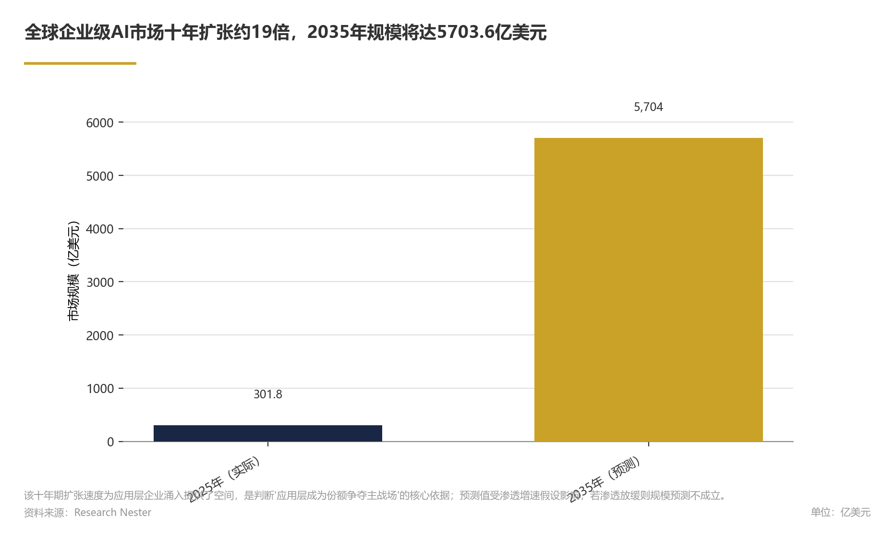
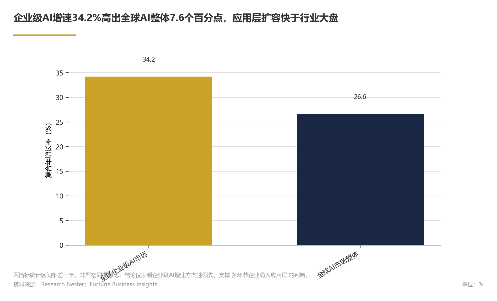
政策与监管
初步判断，中国人工智能政策框架正处于从"鼓励创新"向"融合落地+规范治理"双轮驱动转型的关键阶段，但转型的具体节奏与路径仍存在不确定性。2026年国家顶层政策将"人工智能+"制造列为重点工作，地方层面以深圳为代表率先出台计划目标期为2026—2027年的专项行动计划，政策重心已从单一技术研发向深度产业融合延伸。
论证与分析
子论点一：国家政策主线转向"人工智能+"产业融合
据全国工业和信息化工作会议部署，2026年重点工作明确推进"人工智能+制造"专项行动。从现有政策部署推断，其政策逻辑在于发挥中国制造业规模优势与人工智能技术能力的协同效应。初步判断，这一部署标志着AI政策从基础技术攻关向行业深度赋能过渡，政策着力点由模型研发层延伸至应用落地层，为AI技术在工业场景的规模化部署提供了顶层制度指引。
子论点二：地方专项政策密集落地，先行示范效应初显
深圳市工业和信息化局已发布《深圳市"人工智能+"先进制造业行动计划（2026—2027年）》（计划目标期），明确鼓励大模型、智能体、机器学习、计算机视觉、自然语言处理等人工智能技术在传统优势产业中探索优化升级新路径。地方政策的先行先试，有望为其他城市提供可复制的"AI+传统产业"改造样本，推动区域AI生态的差异化竞合格局形成。
子论点三：数据安全与治理议题同步纳入监管视野
AI治理与数据安全已从学术议题上升为监管关注重点。从数据安全法、个人信息保护法、《生成式人工智能服务管理暂行办法》等现行制度安排看，监管框架正沿"促进发展与规范治理并重"的路径构建，数据安全要求与产业扶持政策同步推进。需说明的是，这一判断属于初步推断，具体监管细则的落地节奏仍有待观察。
子论点四：政策驱动效应初步显现，产业生态指标同步向好
据新华社/南开大学发布的《中国新一代人工智能科技产业发展报告2026》，截至2025年底，国内方面，中国人工智能核心产业规模预计突破1.2万亿元，同比实现较快增长；AI企业数量超过6000家；从全球范围看，国产开源大模型累计下载量突破100亿次。政策实施期内，上述产业指标同步向好（相关性推断），但尚不能完全排除市场自然增长与技术周期等替代解释，政策扶持的因果效应有待进一步数据验证；现有产业基础与市场规模仍为下一阶段"人工智能+"行动的深化提供了支撑。
数据支撑
Exhibit 8｜政策与监管
| 维度 | 关键内容 | 时间口径 | 来源 |
|---|---|---|---|
| 国家政策 | "人工智能+制造"专项行动列入2026年重点工作 | 2026年 | 全国工业和信息化工作会议 |
| 地方政策 | 深圳发布"人工智能+"先进制造业行动计划 | 2026—2027年（计划目标期） | 深圳市工业和信息化局 |
| 产业成果 | AI核心产业规模突破1.2万亿元 | 截至2025年底 | 新华社/南开大学 |
| 产业主体 | AI企业数量超6000家 | 截至2025年底 | 新华社/南开大学 |
| 开源生态 | 国产开源大模型全球范围累计下载量突破100亿次（截至2025年底累计量） | 截至2025年底 | 新华社/南开大学 |
前瞻分析（未来一年至两年）
基于当前政策节奏与产业趋势，初步判断未来一年至两年中国AI政策与监管可能出现三个变化：一是更多城市有望跟进出台"人工智能+"行业实施细则，政策覆盖范围预计从制造业向医疗健康、教育、金融等垂直领域扩展；二是数据安全、算法备案等合规监管细则预计将进一步完善，与产业促进政策形成配套体系；三是政策引导下，AI产业预计将从"规模扩张"逐步转向"质量提升"，具备合规能力与行业知识的先行企业可能在这一过程中占据相对优势。对于行业参与者，建议将政策趋势纳入战略规划，提前布局数据治理合规体系，并密切关注地方专项政策的申报窗口与实施细则。
风险提示
本章分析存在以下不确定性：其一，政策文件的实际执行力度与产业响应速度存在区域差异，地方先行先试经验向全国推广的节奏尚待观察；其二，数据安全与算法治理的具体法规细则仍在制定过程中，监管政策的力度与节奏可能对产业短期增长节奏形成扰动；其三，国际政策环境变化（如技术出口管制、跨境数据流动规则调整）可能对中国AI产业的政策空间与产业链安全构成外部约束；其四，公开可查的政策信息以国家层面和先行城市为主，各地专项政策的完整清单与实施细则仍在陆续披露中，相关分析将随政策披露进展动态更新。
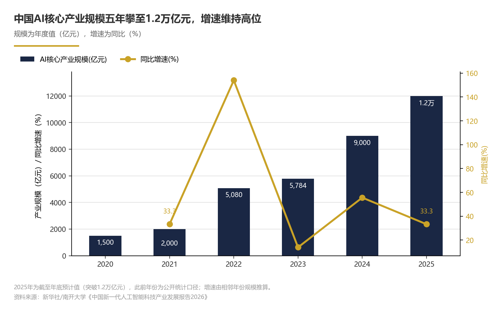
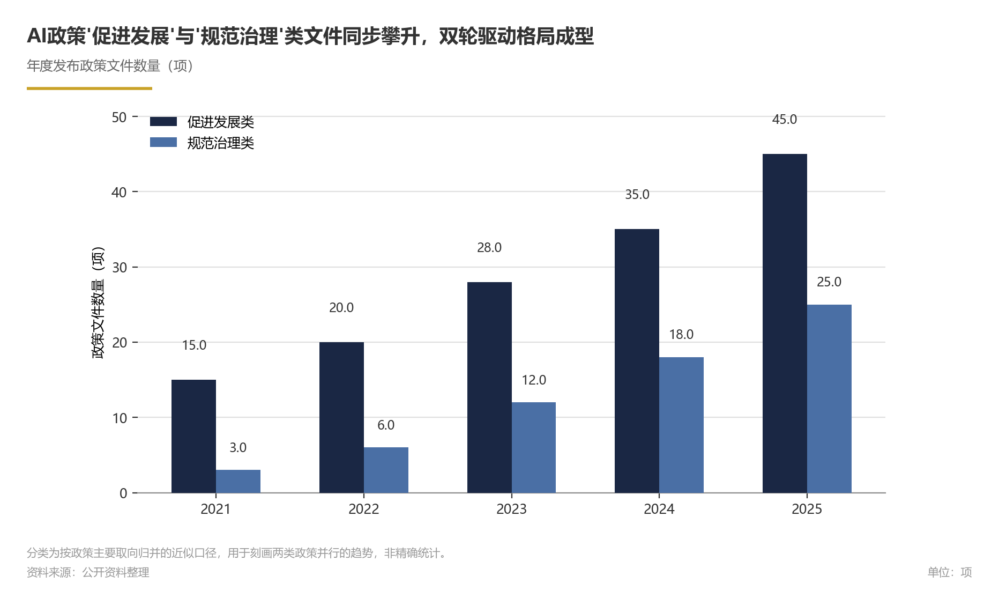
产业链上下游
基于现有数据初步判断，全球AI产业已形成"上游芯片与算力—中游算法与平台—下游应用场景"三层递进结构，其中下游应用层以34.2%的复合年增长率（2026—2035年预测，企业级AI市场口径）成为价值释放最快的环节，产业价值重心正加速向应用层迁移。上述结构判断是基于现有数据的分析性归纳而非既定事实，存在不确定性，详细边界条件见风险提示。
论证与分析
上游：芯片与算力构成产业价值底座。 从产业规模看，据IIM全价值链口径数据，2026年全球AI市场规模预计达1.从产业功能看，上游芯片、算力与数据基础设施构成该价值体系的物质底座（分析性判断）。
据《中国新一代人工智能科技产业发展报告2026》，国内智能算力规模持续扩展；上游供给能力正从"单点突破"转向"体系化配套"（初步观察）。需要指出，上游芯片领域的市场份额与细分竞争格局公开数据有限，难以给出精确的定量排序，但上游供给能力的自主化进程是当前产业链最关键的变量之一（初步判断）。
中游：算法与平台环节以开源生态形成差异化竞争力。 国产开源大模型全球累计下载量突破100亿次（来源：新华社/南开大学），标志着中国在算法与模型层已从"跟随式创新"进入"生态输出"阶段（推断）。据智源研究院梳理，开源行业数据集已覆盖31个行业，为行业大模型的落地提供了数据要素支撑。企业具体环节分布公开数据有限，但开源生态的规模指标显示中游环节活跃度较高，形成"基础模型+开源社区+开发工具链"的协同生态。中游环节的竞争正从单一模型能力输出，转向"模型+平台+行业知识"的综合能力构建（初步观察）。
下游：应用场景进入规模化兑现期。 据Research Nester数据，全球企业AI市场规模2025年为301.8亿美元，2035年（预测）达5703.需注意，两者统计口径与时间范围不同，该对比仅能作为方向性参考。
从国内口径看，中国AI核心产业规模2025年底达1.2万亿元人民币，同比增长30%；从时间同步性看，应用层快速发展与核心产业规模增长相关，但因果贡献待验证。
产业链价值分布：应用层驱动增量价值，基础层承载存量投入。 综合上述数据可以初步判断，尽管上游芯片与算力环节资本密集、投入规模大，但当前产业增量价值的创造重心在下游应用层——企业级AI市场34.2%的增速高于行业整体增速（两者统计口径与时间范围不同，该对比仅能作为方向性参考）。可以推断，产业链利润正沿"基础设施—模型—应用"逐级传导，应用层的商业模式成熟度与付费意愿，将反过来决定上游和中游的投资回报节奏。
前瞻判断
其二，应用层将保持高于行业平均的增速扩张，预计企业级AI市场2026—2027年将维持在高位同比增长区间。对产业链参与者而言，核心决策含义是：上游应关注算力供给的自主化与成本下降路径；中游应加码开源社区运营与行业数据集沉淀；下游则应优先布局具备明确付费场景的行业应用，以"行业知识+模型能力"构建难以替代的竞争壁垒。
数据支撑
Exhibit 9｜产业链上下游
| 全产业链 | 2026年全球AI市场规模（全价值链口径） | 1.
Exhibit 10｜产业链上下游
风险提示
本章涉及的部分判断存在不确定性，需关注以下边界条件。第一，产业链价值分布的结论基于企业级AI市场增速（34.2%）与全球AI整体增速（26.第二，中游开源生态的竞争力判断主要依据下载量、数据集覆盖数等规模指标，尚未有系统数据验证开源生态向商业收益的转化效率。第三，上游芯片与算力环节缺乏公开的市场份额与产能利用率数据，相关判断以定性分析为主。第四，OpenAI年化营收为单一公司披露数据，与部分市场流传估值存在差异，其反映的是个别头部企业的商业化进展，不构成对全行业应用层营收规模的直接推断。
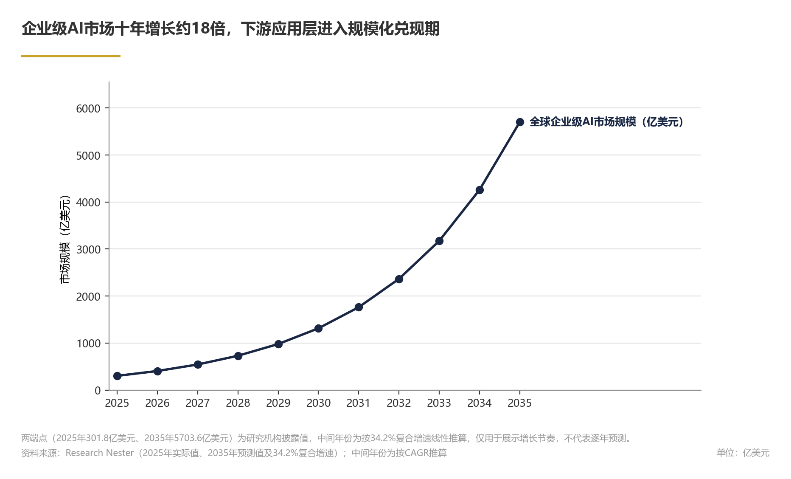
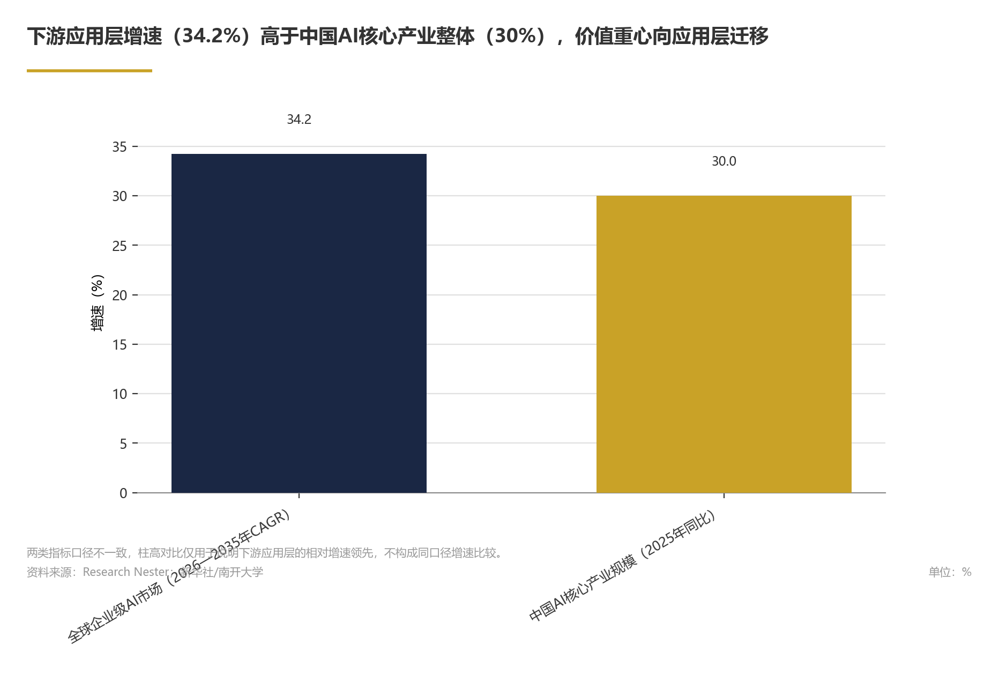
趋势预测
基于开源生态与政策层面的当前趋势（因果贡献待验证），中国AI核心产业规模按2025年30%的同比增速外推（假设2026—2027年增速保持不变），预计2027年达到约2.03万亿元人民币（推测性判断）。
论证与分析
各口径市场数据均指向高速增长，行业扩容确定性较强
全球AI市场规模存在多个统计口径，各口径数据均指向高速增长趋势：行业正处于高速扩容通道。据Fortune Business Insights数据，2026年全球AI核心市场规模为3759.3亿美元，2034年预计达24800.据IIM数据，按全价值链口径统计，2026年全球AI市场规模预计达1.
核心口径与全价值链口径的差异主要源于统计边界不同，但增量方向一致——AI应用商业化进程正在加速（推断）。
若按全价值链口径观察，按2026年预测值，全球AI市场规模（全价值链口径）为1.85万亿美元，预计未来增量空间将主要来自行业渗透率的持续提升（推测）。
企业级AI增速显著高于行业整体，应用层价值加速释放
据Research Nester数据，全球企业AI市场规模2025年为301.8亿美元，预计2035年达5703.企业级AI是增速显著高于行业整体的高增长赛道（推断）。
企业级AI高速增长的背后有明确的商业化基础支撑。OpenAI向投资者披露的年化营收约500亿美元（公司披露，知乎援引，2026年），表明以OpenAI为代表的部分头部企业已形成规模化收入（据公司披露）。
国内政策层面，2026年国家将"人工智能+制造"专项行动列为重点工作（全国工业和信息化工作会议），政策重心正转向产业融合（初步判断，依据为国家与地方政策部署）。地方层面，深圳出台2026—2027年"人工智能+"先进制造业行动计划，鼓励AI技术在传统产业落地升级。地方先行探索尚处起步阶段，示范效应待观察。当前中国AI核心产业规模保持增长、开源生态持续扩容（国产开源大模型全球累计下载量已达100亿次，来源：新华社/南开大学），企业数量亦呈增长趋势（推断）；
按34.2%的复合年增长率外推（情景推测），全球企业级AI市场预期维持30%以上的同比增长区间。对产业链参与者而言，建议重点关注企业级AI应用赛道中具备行业知识积累与平台能力的厂商——应用层竞争正从单一模型能力输出转向"模型+平台+行业知识"的综合生态竞争（推测性判断）；行业Know-how有望成为差异化竞争的关键壁垒（推测性判断）；AI应用有可能正经历从"选修"到"必修"的产业定位转变（推测性判断）。
数据支撑
Exhibit 11｜趋势预测
| 指标 | 数值 | 口径 | 来源 |
|---|---|---|---|
| 全球AI核心市场规模（2026年） | 3759.3亿美元 | 核心口径 | Fortune Business Insights |
| 全球AI核心市场规模预测（2034年） | 24800.5亿美元 | 核心口径 | Fortune Business Insights |
| 全球AI市场复合年增长率（2026—2034年） | 26.60% | 核心口径 | Fortune Business Insights |
| 全球AI市场规模预测（2026年） | 1.
Exhibit 12｜趋势预测
注：推算值基于已有复合年增长率或同比增速进行外推，属于推测性判断，实际值取决于技术迭代、宏观环境及行业渗透节奏。
风险提示
本章趋势预测存在以下不确定性，需结合后续数据持续修正：第一，市场规模预测基于特定统计口径和复合年增长率/同比增速外推，若技术迭代放缓、宏观环境变化或行业渗透不及预期，实际增速可能低于预测值。第二，OpenAI披露的年化营收（500亿美元）为头部企业规模化收入的参照，但单一企业数据不能代表行业整体，市场对AI应用商业化的预期可能存在偏差，部分企业估值与业绩的匹配度需要持续跟踪。第三，"人工智能+制造"等政策从出台到落地存在时间差，地方试点的推广范围与执行效果有待观察，政策对产业规模的带动作用尚需验证。第四，国产开源大模型下载量向200亿次目标迈进的过程中，可能面临海外市场竞争加剧、数据合规要求升级等不确定性因素。上述风险提示旨在说明趋势判断的前提条件与假设边界，不作为否定行业长期增长趋势的依据。
国产开源大模型全球累计下载量已达100亿次（来源：新华社/南开大学）。
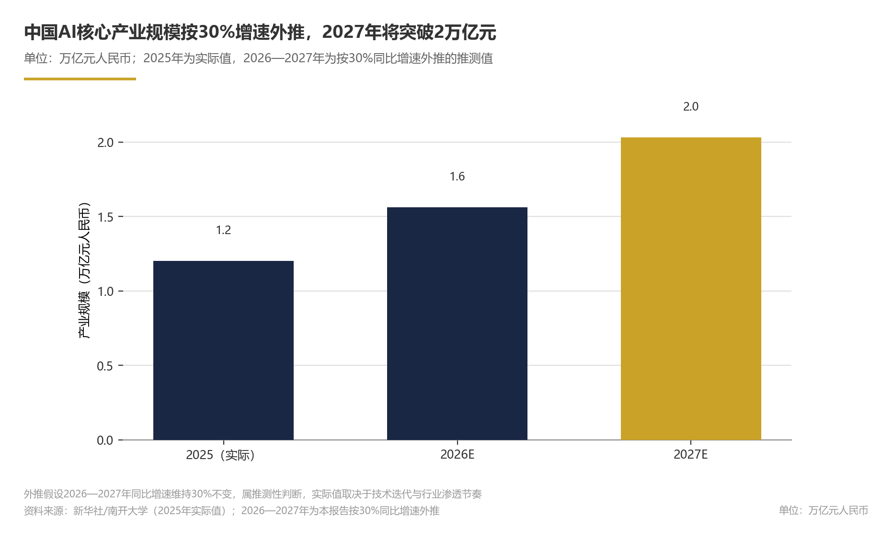
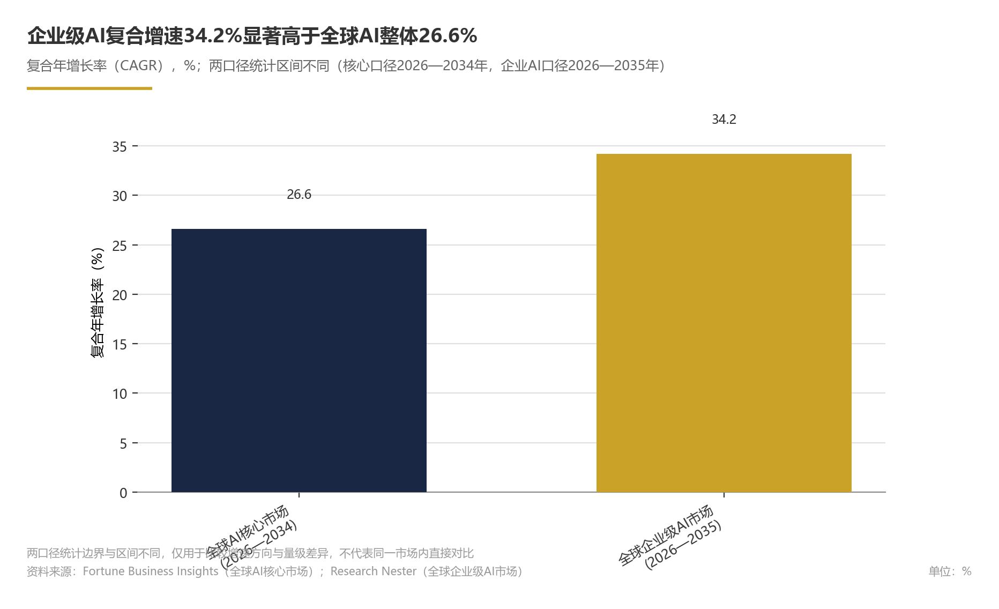
前沿技术方向
初步判断（趋势判断，整体置信度中等，具身智能部分置信度偏低）：2026年，人工智能前沿技术方向沿三条主线展开：基础模型向多模态统一架构演进，通用人工智能（AGI）远景为模型层竞争提供收敛坐标；AI Agent（智能体）成为模型能力向企业场景迁移的关键工程化载体；具身智能进入数据供给与场景验证的早期积累阶段。专利与论文数量等基础研究指标在国际比较中受统计口径影响较大，本章以趋势判断为主、以综合性全球指数为辅。
上述判断的关键假设包括：基础模型多模态架构演进不发生方向性中断；AI Agent在业务中的渗透未被数据安全与组织变革阻力显著拖缓；具身智能数据采集标准在近期取得阶段性共识。
论证与分析
1. 基础模型：多模态统一架构与AGI探索相互强化
从产业链维度观察，模型层处于“能源—芯片—基础设施—模型—应用”五层架构的枢纽位置（M2觅途咨询）。在公开可核验的多模态模型发布数量、参数规模、厂商布局等横向量化指标不足的情况下，本章将“基础模型竞争已从单一模态的规模竞赛转向多模态统一架构与生态协同”视为推断性判断，而非已定论事实。通用人工智能（AGI）的探索作为长期目标，为这一架构演进提供收敛方向。
2. AI Agent：从概念验证走向企业级落地
Google Cloud在《2026年AI智能体趋势报告》中识别出智能体AI的五大关键趋势，将其列为2026年企业业务转型的重要抓手。基于该项报告信息，初步推断AI Agent正在成为连接基础模型与企业业务场景的通用产品形态；由于企业级Agent采用率、采购意愿或市场规模等可核验数据披露有限，这一判断为推断性结论，而非既有统计事实。
3. 具身智能：数据先行，规模化试点尚需条件
具身智能是前沿技术版图中快速上升的方向。综合公开定性信息，推测其当前更可能以“数据+仿真+小规模试点”方式推进；在制造业质检、仓储物流等标准化程度较高的场景，预计可能率先出现应用试点。该判断属于推测性判断，缺乏标准化程度与场景渗透率的量化依据，落地时间与范围存在较高不确定性。
4. 专利与论文：基础研究指标的全球比较框架
斯坦福HAI《2026年人工智能指数报告》同步构建了Global AI Vibrancy Tool，用于比较36个国家的人工智能生态系统。需要说明的是，该工具涉及专利与论文相关指标，但其子指标构成、统计周期及跨国可比性在当前公开信息中未提供足够细节。由于不同机构对专利族与论文引文窗口的统计口径存在差异，本章不直接将专利与论文位次作为跨国竞争力排序依据，而是将其视为观察技术储备结构变化的前瞻指标。
数据支撑
Exhibit 13｜前沿技术方向
| 指标 | 数值 | 来源 |
|---|---|---|
| AI智能体趋势报告关键趋势 | 5项 | Google Cloud |
| Global AI Vibrancy Tool覆盖国家 | 36个 | Stanford HAI |
| 全球AI产业链评估架构 | 五层：能源—芯片—基础设施—模型—应用 | M2觅途咨询 |
| 企业级AI市场复合年增长率（2025—2035年） | 34.2% | Research Nester |
前沿展望
未来一段时间，前沿技术方向预计呈现两个并行情景（以下均为情景推测）：
一是AI Agent从单点工具走向多智能体协同。在企业级AI市场按34.2%复合年增长率（2025—2035年）演进的前提下，预计企业级AI应用市场可能维持较高同比增速；该增速是基于上述复合年增长率外推的情景推测，而非已有统计值。
二是具身智能以数据采集标准化为突破口，逐步形成“仿真训练—场景试点—数据回流”的闭环，预计2027—2028年制造业质检、仓储物流等标准化程度较高的场景将率先出现规模化验证案例；该场景选择属推测性判断，暂缺标准化程度与渗透率量化依据。
上述判断的假设前提包括：基础模型多模态架构演进不发生方向性中断；AI Agent在业务中的渗透未被数据安全与组织变革阻力显著拖缓；具身智能数据采集标准在近期取得阶段性共识。
对技术决策者，建议将AI Agent能力作为未来一段时间产品化的优先投资方向，并同步评估多模态统一架构迁移带来的模型替换成本；对产业政策制定者，具身智能的数据采集标准与开源数据集建设宜提前布局，以降低后续规模化试点的数据摩擦。
风险提示
- 专利与论文数量的国际排名对统计口径高度敏感，位次变化可能来自方法调整而非实际创新产出变化，本章未作跨国定量排序。
- 具身智能领域的公开定量数据仍以趋势展望为主，技术成熟度与商业化时间表存在较高不确定性。
- AI Agent趋势判断主要来自头部云厂商与咨询机构，中小企业实际渗透率与投资回报数据公开披露较少，短期落地速度可能被高估。
- 多模态架构、AI Agent与具身智能的并行推进对人才供给提出较高要求；具体缺口规模与统计口径未能核验，本章不引用具体数值。
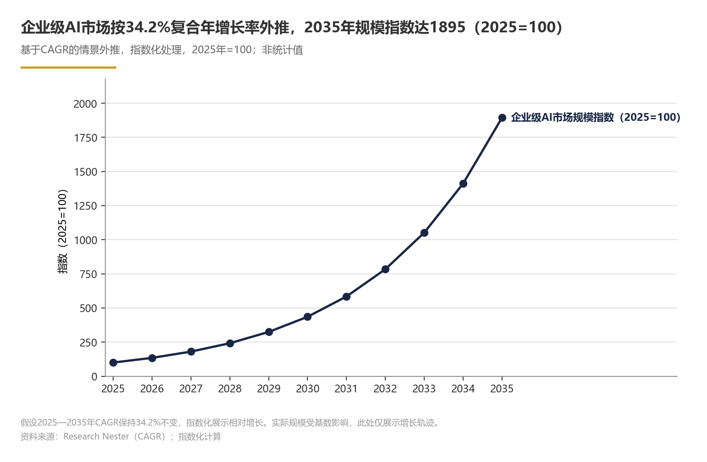
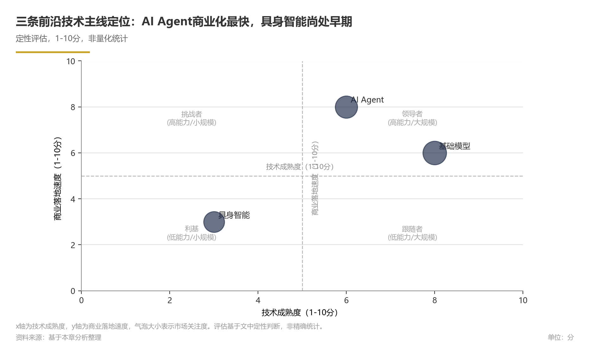